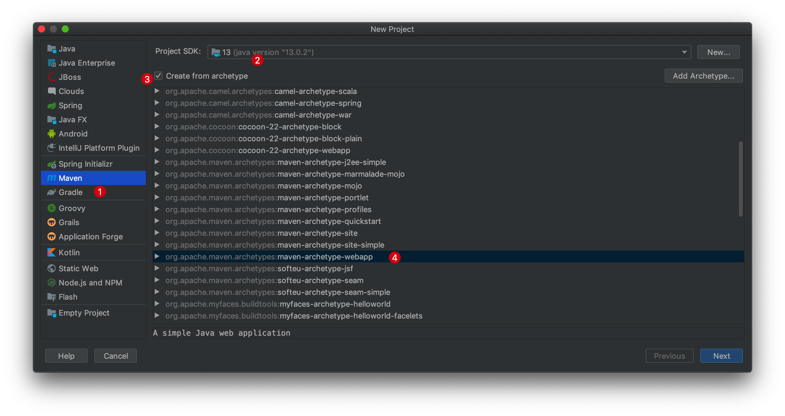

1、开发环境
- IntelliJ IDEA ver2019.3.2 （money购买正版/高校邮箱免费申请使用/破解工具/30天免费使用）
- Maven ver3.6.3
- Spring Boot ver2.2.4 Release
- Java SE JDK ver13.3.2
2、创建Maven项目
1、关于IDEA的个人化配置，可以参照https://blog.csdn.net/m_m254282520/article/details/78900238
2、打开IntelliJ IDEA-> Create New Project。
3、Maven->Project SDK->Create from archetype->webapp：

4、设置name, groupID, artifactID，如果有需要的话可以自定义User settings file和Local respository路径，这里的路径都是默认的路径，setting.xml是maven的配置文件，local repository存储的是项目所依赖的所有jar包。当项目所依赖的包不在local repository中，IDEA会自动下载依赖包到local repository中，可以理解为一个公共的资源池，对于所有新建的maven项目共享资源池中的资源。然后一路傻瓜式操作即可。
环境配置
5、创建完毕后，需要加在所需的依赖包，但是有时候会存在依赖包久久不能下载成功的现象，之前我下了一个下午，一直没能下载成功，可能是因为这些资源有部分需要连接到国外的资源网站进行下载，所以带宽被限制。解决方法是，打开project structure->Maven->open settings.xml
添加以下代码，使用阿里云镜像来进行下载所依赖的jar包。
<mirrors>
<mirror>
<id>alimaven</id>
<name>aliyun maven</name>
<url>http://maven.aliyun.com/nexus/content/groups/public/</url>
<mirrorOf>central</mirrorOf>
</mirror>
</mirrors>
由于这里修改的是IDEA内置的Maven框架的全局settings配置文件，所以以后再使用IDEA创建新项目，下载依赖包时都可以体验飞起的感觉。如果要使用外置的Maven框架，则需要重新执行步骤5。
6、打开pom.xml，添加所需要的包依赖：
<parent>
<groupId>org.springframework.boot</groupId>
<artifactId>spring-boot-starter-parent</artifactId>
<version>1.5.6.RELEASE</version>
</parent>
<dependencies>
<dependency>
<groupId>org.springframework.boot</groupId>
<artifactId>spring-boot-starter-web</artifactId>
</dependency>
</dependencies>添加完毕，重新加载，双击项目，project structure->maven->reimport。
在左侧项目结构src->main中添加java文件夹，创建完毕后，双击java文件夹，选择Mark Directory AS，设置Sources Root，这一步骤是要告诉IDEA，这个文件夹下所包含的文件，在构建工程时，需要作为一部分编译进去。
左侧项目结构src->main中添resource文件夹，同样，选择Mark Directory AS，设置Resources Root，表示这是应用所依赖的资源文件。
之后，在java目录下，创建package：com.springbootcourse.springbootcourse1。在新建的package目录下，创建SpringbootCourse1.java，@SpringBootApplication是表示这个类为项目的启动类。
@SpringBootApplication
public class SpringbootCourse1 {
public static void main(String[] args) throws Exception {
SpringApplication.run(SpringbootCourse1.class, args);
}
}然后在package目录下创建controller文件夹，并在其目录下新建HelloController.java，关于@RequestMapping注解的相关知识，可以参考：https://www.oschina.net/translate/using-the-spring-requestmapping-annotation
@Controller
public class HelloController {
@RequestMapping("/")
@ResponseBody
String index() {
return "Hello World! haha";
}
}执行上述操作后，项目架构如下图所示：
7、编辑启动配置，上方菜单栏中run->edit configurations,
8、大功告成，运行项目，
在浏览器端打开http://localhost:8080/ 检查是否出现”Hello World! haha”字符。
3、其他
1、如果在编译过程中，出现端口被占用的情况，如下所示：
打开终端，输入lsof -i tcp:8080，查看8080端口是否被占用，然后根据PID(进程id)杀掉占有的进程即可，然后重新运行。